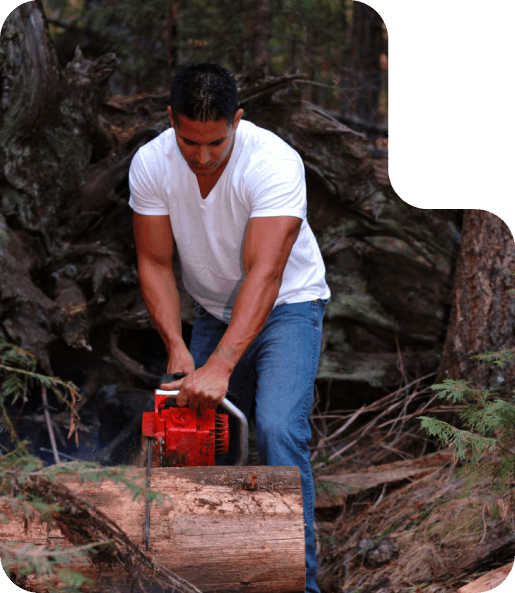
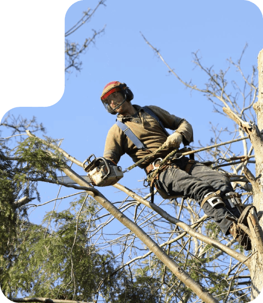
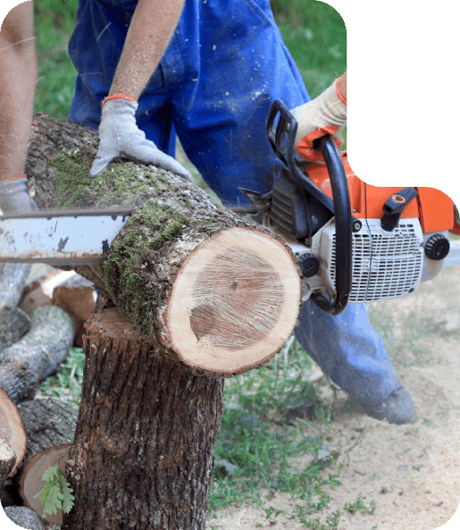

Tree work done right. The first time. Every time.
From a single dead limb hanging over your driveway to clearing an entire lot for new construction — we handle the full range of tree work in the Dubuque area. Every job done by our crew. Every quote honest. Every yard cleaned up before we leave.

Sometimes a tree's gotta come down. Maybe it's dead. Maybe it's leaning toward your house. Maybe it's right where the new garage is going. Whatever the reason — we take it down clean.
Big trees in tight spaces don't scare us. Tree threading the line between two power poles? We've done it. Tree six feet from your bedroom window? We've done it. We cut in sections, we plan the drop, and we don't put your property at risk.
Trimming isn't just cosmetic. Done right, it keeps your trees healthy, prevents limbs from falling on your roof or your car, and keeps storm damage from turning into a five-figure problem.
We trim to ISA standards — meaning we cut where the tree can heal. Hack jobs from guys who don't know what they're doing leave open wounds that invite rot and disease. We don't do that. We make the right cut at the right place so the tree comes back stronger next season.


That stump in the yard isn't doing you any favors. It's an eyesore, it kills your mower blades, it attracts termites and carpenter ants, and it makes the whole property feel unfinished.
We grind stumps below grade — usually 12 to 24 inches deep depending on what's going on top of it. Then we level the spot, top it with dirt, and you can plant grass, lay sod, or pour concrete right over it. Looks like the stump was never there.
Tree on the roof. Limbs across the driveway. Power line tangled in branches. When a storm rolls through Dubuque, you don't have time to wait for a callback — you need a crew that picks up and shows up.
We run 24-hour emergency service for exactly this. Whether it's straight-line winds, a downed tree from heavy snow, or storm damage from one of those Iowa thunderstorms that turns sideways — we handle it. Fast cleanup, safe extraction, and we can help you document everything for your insurance claim.
Building a house. Expanding a field. Prepping a job site. Clearing scrub off a property you just bought. Whatever the reason — we'll clear the lot.
We bring the right equipment for the size of the job. Small lots, big acreage, dense brush, mature trees — different jobs need different tools, and we have them. Trees come down, get hauled out, and the lot's ready for the next phase of work.